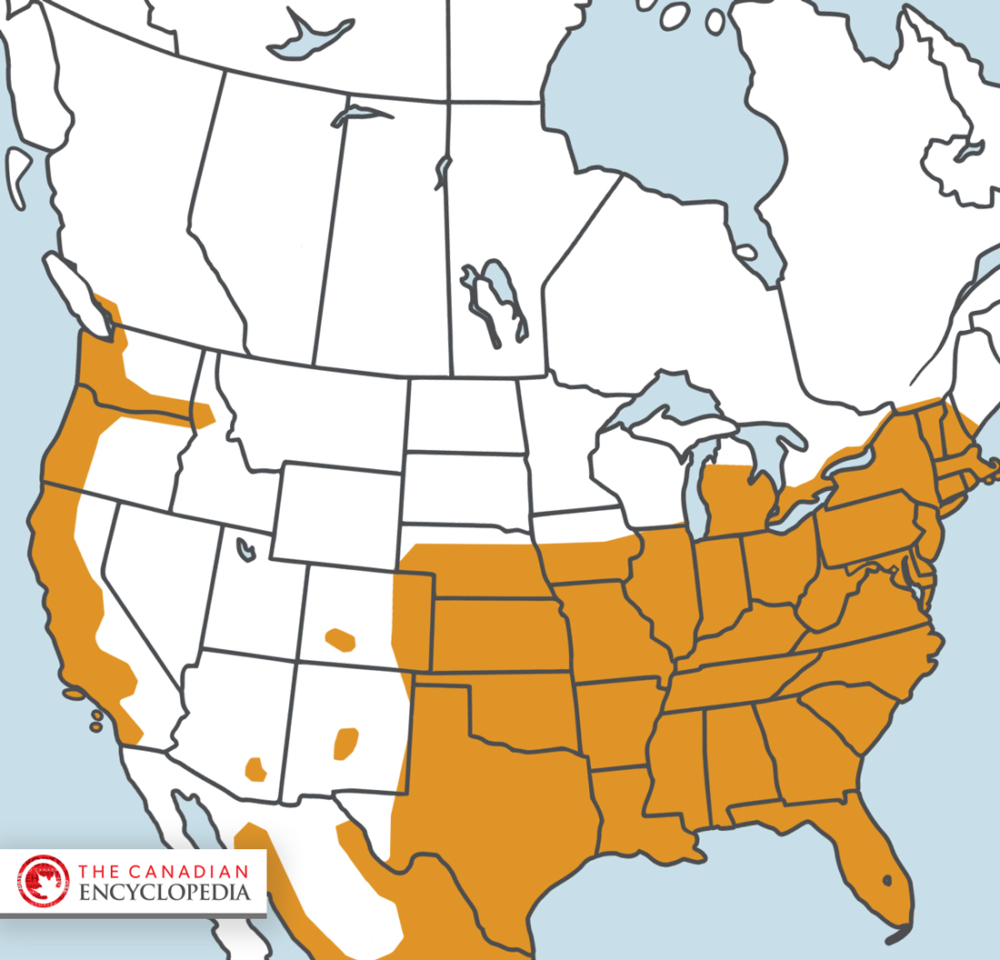
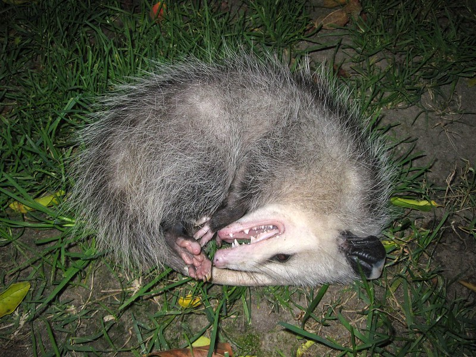
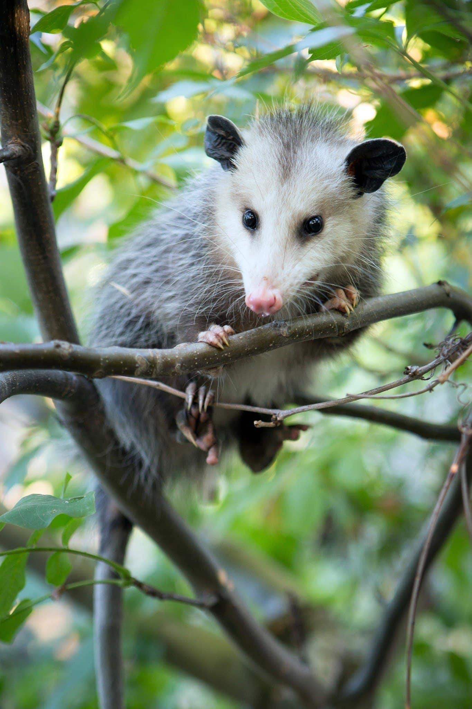

01
Lone Marsupial
The Virginia opossum is the only marsupial found north of Mexico. Like kangaroos and other marsupials, mothers carry their young in a pouch during their early development.
Our underappreciated neighbour
Working quietly after dark, opossums play an important role in keeping ecosystems healthy.
The Virginia opossum is the only marsupial found north of Mexico. Like kangaroos and other marsupials, mothers carry their young in a pouch during their early development.
Opossums are highly resistant to rabies. Their naturally low body temperature is thought to make them a poor host for the rabies virus, so rabies infections in opossums are relatively uncommon.
Despite having 50 sharp teeth, opossums are generally shy and non-aggressive animals that prefer to avoid confrontation. When threatened, they may bare their teeth and hiss, but their first instinct is usually to get away rather than fight.

Opossums are found across much of North and Central America, ranging from southern Ontario and Quebec south through the United States, Mexico, and Central America. In Ontario, they are most common in the southern part of the province, around the Great Lakes. They are highly adaptable and can live in forests, wetlands, farmland, and even suburban areas. Climate change is affecting where they can survive: milder winters may allow them to expand farther north, but increasingly unpredictable weather and extreme conditions can still threaten their survival.

Opossums are nocturnal and most active between dusk and dawn, when they emerge to search for food and explore their surroundings. Opossums are famous for their tendency to “play dead” when threatened. This isn’t a conscious act or a clever performance; it’s an involuntary response to stress that causes the opossum to become completely still and appear lifeless. The state can last from minutes to several hours, giving a potential predator a reason to lose interest.

Opossums play an important role in their ecosystems as both scavengers and predators. They help clean up animal remains and consume a wide variety of insects, small mammals, reptiles, and other animals. They can even prey on venomous snakes. Opossums also groom themselves frequently, consuming many of the ticks that attach to their bodies. By helping control insects and other small animals, opossums quietly contribute to the health of their ecosystems.
Opossums are adaptable animals, but they still depend on healthy habitats and safe places to shelter. Protecting forests, wetlands, and connected natural spaces helps opossums and the many other species that share their environment.